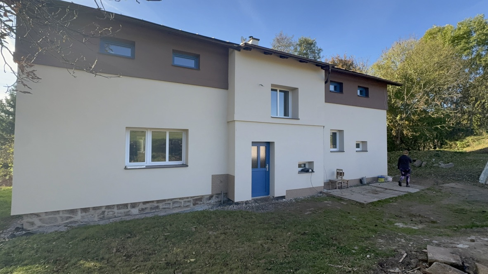
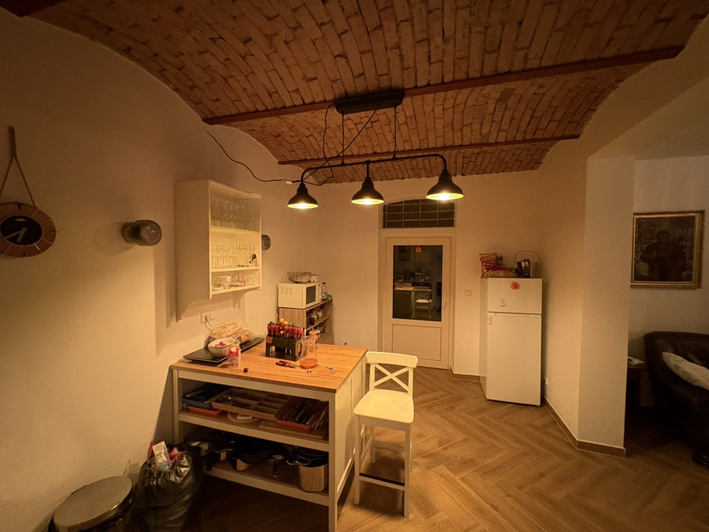
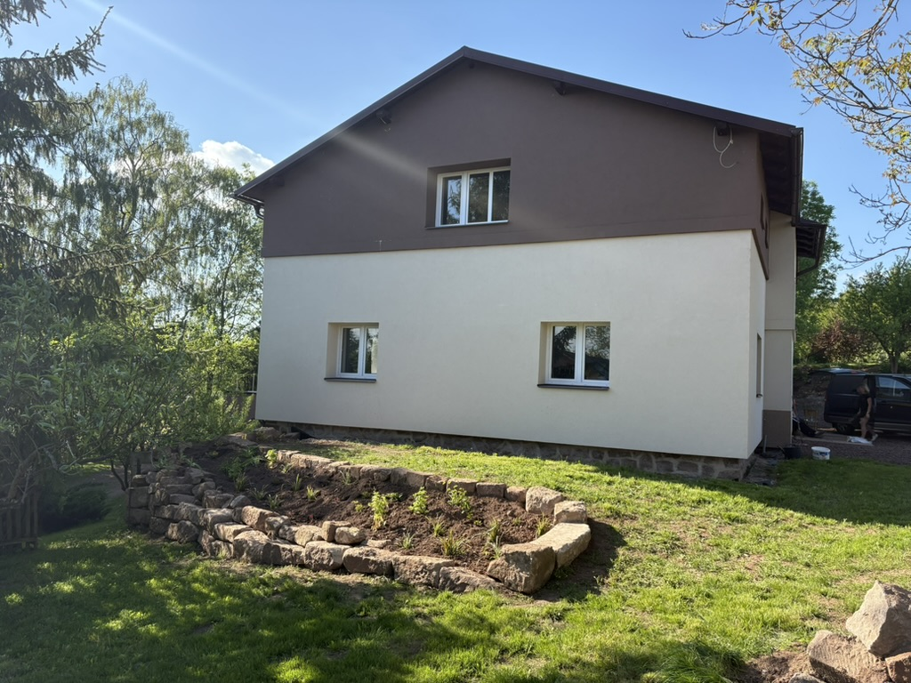
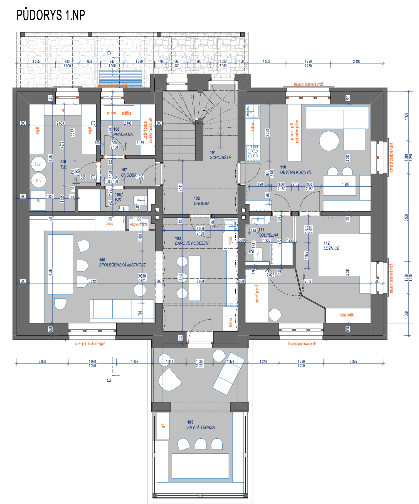
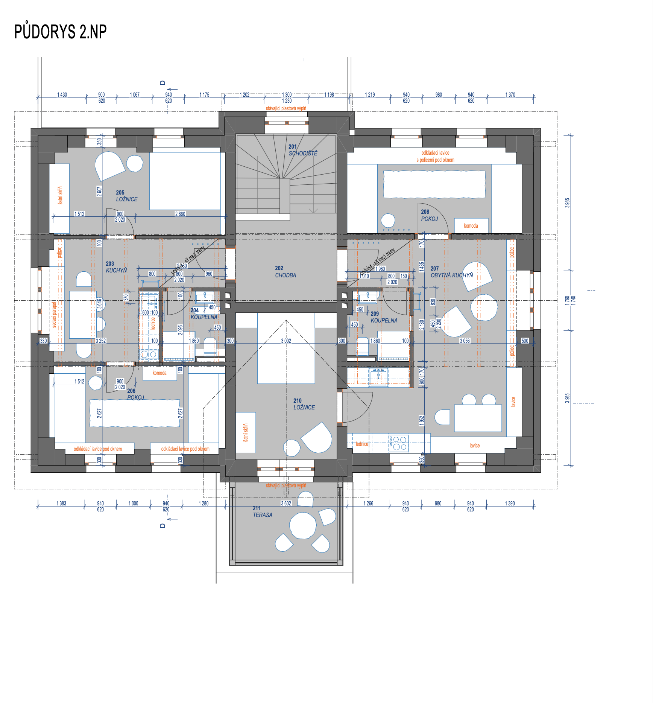

O chatě
Tři apartmány
v srdci přírody
Chata Javořinka nabízí tři samostatné apartmány, každý s vlastní kuchyňkou a koupelnou. Ideální pro rodiny, skupiny přátel nebo ty, kdo hledají klidné místo pro odpočinek v Javoří horách.
K dispozici je také prostorná společenská místnost – skvělá pro společné večery, stolní hry nebo posezení u nápoje po celodenním výletu.
Rozlehlá zahrada, klid venkova a bezprostřední blízkost turistických tras dělají z Javořinky ideální základnu pro aktivní dovolenou i líné odpočívání.

Chata a okolí
Výhled z terasy

Společenská místnost
ZahradaOkolní terén
Výhled na Javoří hory
 Grilovací místo
Grilovací místoDispozice chaty

1. nadzemní podlaží

2. nadzemní podlaží